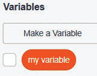
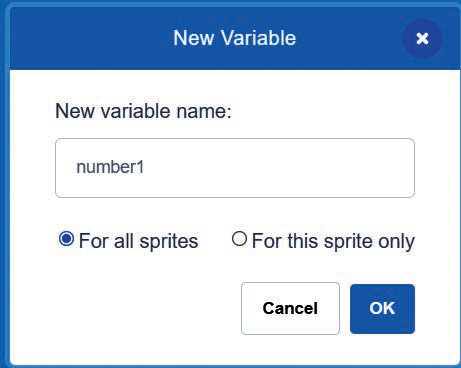

the variables using names that remind you of what quantity the variable represents in our everyday lives.
Scratch/Scratch for Quorum allows you to create and use variables. Before you can use a variable in Scratch/Scratch for Quorum, you must create it. Once you are done with it you can delete it. Follow the steps in Activity 2 to learn how to create, rename, and delete variables in Scratch/Scratch for Quorum.
Activity 2: Creating, renaming, and deleting variables in Scratch/Scratch for Quorum
(a) Creating variables
Steps
- 1. Go to the Variables block.
- 2. Click/press Make a Variable. Observe Figure 2 (a).
- 3. Enter the name of the variable in the dialog box that appears. Remember to give the variable a name that remind you of what quantity the variable represents. Example number1, score, name, time, NumberOfPens and PenPrice.
- 4. Choose whether the variable is for all sprites or only for this sprite. Observe Figure 2 (b).
- 5. Click/press OK to create and save the variable. Observe Figure 2 (c).

